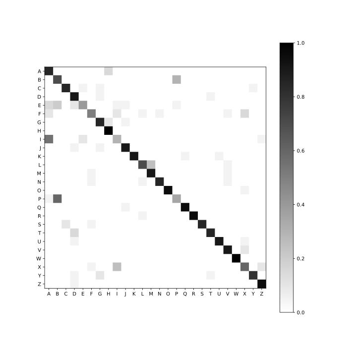

CS 4641 Spring 2020
We created a silent spelling system that aims to recognize language from silent utterances. This system is useful for people with speech impairments, for people in noisy environments, and for people in social situations that restrict speech. Speech impairments may result from ALS, tracheostomies, or deafness. Noisy environments limit the effectivess of technologies that rely on speech as input, such as conversational AI and dictation tools. Social situations, like meetings, and private information may require a subtler interface than speech. Researchers have explored using different sensors, like surface electromyography and video, to capture data that encodes speech. We further existing research on speech recognition by using Hidden Markov Models to recognize silent utterances at the letter level.
In 1989, Steve Young developed the HTK Hidden Markov Model Toolkit at Cambridge University for the primary purpose of speech recognition research. Interest in the software developed from other speech laboratories and universities for pedagogical purposes. By 1994, Young had described in detail the design and philosophy supporting HTK.
By 2003, the burgeoning field of wearable computing saw increased use of gesture recognition as a tool for interaction. However, building systems for gesture recognition required significant knowledge and effort. Westeyn developed the Georgia Tech Gesture Toolkit on top of HTK to ease the development of such a system. The Georgia Tech Gesture Toolkit trains models that recognize in real-time and off-line.
More recently, a silent speech recognition system was developed by Li. The system relied on the CompleteSpeech SmartPalate to collect data and a support vector machine to recognize speech from the collected data. The system had a 21 word vocabulary, and was evaluated through user studies with offline and online recognition for native and non-native users. Li also examined interaction with the silent spelling system in two settings: sitting and walking. Their results indicated that the system used by native speakers had high accuracy and information transfer rate comparable to that of a mouse and touchscreen.
Figure 1: SmartPalate Device
<
In an effort to develop our silent speller system, we trained a Hidden Markov Model to recognize silent utterances of letters using a dataset collected by Naoki Kimura and optimized our pipeline with respect to speed and memory.
The CompleteSpeech SmartPalate is a retainer fitted with 124 capacitive sensors. Each sensor records a zero or one at a frequency of 100Hz. Naoki used the SmartPalate to collect the dataset used to train and test our Hidden Markov Models. The dataset consisted of 20 samples of each letter of the alphabet. Each sample was collected over the course of a second, so each sample consists of 100 frames of a 124 diminsional binary vector.
Figure 2-1: Visualization of the capacitive sensors that were activated over the course of uttering the letter "A"
Figure 2-2: Visualization of the 128 capacitive sensors in the SmartPalate.
Figure 2-3: Visualization of the capacitive sensors that were activated over the course of uttering the letter "B"
The algorithm used to classify the first dataset was a Hidden Markov Model. Specifically, we used a left-to-right Hidden Markov Model, which results in a HMM representation like in figure_: To optimize our silent spelling system's speed, we subsampled the data. Subsamples of the data were created by summing multiple timesteps into a single timestep or grouping the capacitive sensors into sections. To subsample over time, we summed every five consecutive 128 dimensional vectors to a single 128 dimensional vector with values between 0 and 5. Subsampling by section converted each 128 dimensional vector into a 10 dimensional vector with values representing the amount of capacitive sensors activated in each group.
Figure 2-4: Visualization of the capacitive sensors that were activated over the course of uttering the letter "B"
Figure 2-5:
To evaluate our recognizer's accuracy, we performed 4-fold stratified cross validation. The overall accuracy of the model was 79.82%.
The accuracy of our models were determined by its offline classification performance.
Moving forward, we plan on increasing the accuracy of our recognizer by introducing context training and a statistical grammar, measures that have been shown to decrease the error rate by a factor of eight in practice.